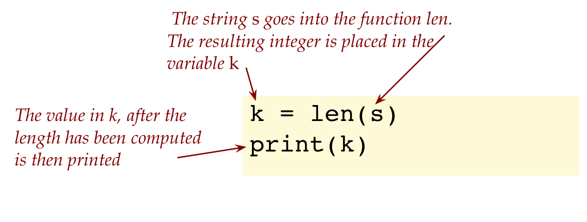
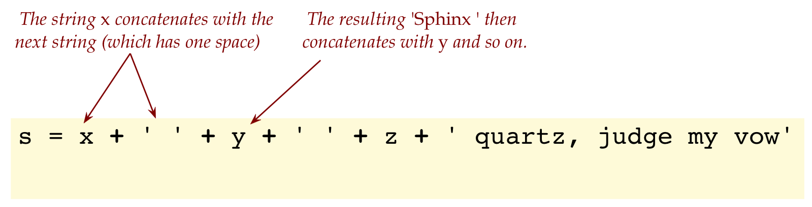

Module 5: Strings and Characters
Objectives
By the end of this module, for simple HelloWorld-like programs, you will be able to:
- Write simple code that works with strings and characters (letters, digits, symbols like $)
- Identify some syntax errors related to characters and strings.
- Have some stress relieving fun after that long integer module.
5.0 Strings
About strings:
- We have already seen examples of strings, as in:
print('Hello')- Here, whatever is in between the quotes is treated as one thing: a sequence of letters, digits or symbols.
- Here are examples with digits, symbols and spaces:
print('Hello there. I'm on my way to 123 Main Street')
print('#@%&! I'm late!')- The entire sequence of letters, digits, punctuation etc from the
HinHelloto thetinStreetis one string. - And you already know that “#@%&!” translates to “Drat!”
Just like integer values can be placed in variables, we can do the same with strings:
- Example:
s = 'The quick brown fox jumps over the lazy dog'
print(s)Here, the variable s has the string The quick brown fox jumps over the lazy dog
- If you’re wondering how a variable (we used a box as an analogy) can fit so many letters, that is a somewhat advanced topic.
- For now, let’s proceed with the notion that we can do this.
Consider this example:
# Make a string and print it:
s = 'The quick brown fox jumps over the lazy dog'
print(s)
# Extract the length of the string and print that:
k = len(s)
print(k)- Here, we are using a function called
lento extract the length of a string. - The function
lenis likeprintin one respect: there is something that goes in between the parentheses:  - But it is different in another respect: something comes out of the function and gets placed into the variable
k - We will later look further into how we can write our own functions that have this property of “making something and giving the result” to a variable.
5.1 Excercise: Type up the above in my_string_example.py. What is the printed length? Remember, answers to non-coding questions like this need to be in the appropriate module pdf, in this case module5.pdf.
5.1 String concatenation
Strings would be of limited use if there were no way of combining them, just as integers would be if there were no way of performing arithmetic.
The joining of two strings end to end is called concatenation.
Consider this program:
x = 'The'
y = 'quick'
z = 'brown'
s = x + y + z
print(s)5.2 Excercise: Type up the above in my_string_example2.py. What is the output?
About concatenation:
- The same
+that we used for integer addition is what’s used to concatenate strings. - Thus multiple-usage of symbols in a programming language is common: we’ll see other examples of a single symbol or function serving multiple purposes.
- How come Python doesn’t get confused and think that x, y, z are integers wanting to be added?
- Python is smart about context, and understands that when
+is used with strings, the only reasonable thing to do is to concatenate. Likewise, with numbers, Python will add them.
- You may have noticed the words all strung together without a space. So let’s add the spaces:
x = 'Sphinx'
y = 'of'
z = 'black'
s = x + ' ' + y + ' ' + z + ' quartz, judge my vow'
print(s)
print(len(s))- Notice how multiple strings, some from variables, and some just written into the statement, are concatenated: 
5.3 Excercise: Type up the above in my_string_example3.py. What is the output? How many times did a concatenation occur?
We also introduced something new:
print(len(s))Here’s how to read this line:
- First look at
printand notice that there’s something between the parentheses:
print(len(s))- Think to yourself: something is going to be given to
printto get printed. - Now look at what’s going to
print:
print(len(s))- Here we see that the length of the string
sis being computed. - What you should be thinking is:
- The length will first get computed.
- And then the result (36, in this case) will be sent to
print. printthen prints it to the output, which is what we see.
- One way to think about this is to use a term, nesting, that we’ve seen before:
- Here, the function invocation to
lenis nested in the function invocation toprint - The innermost in this case executes first.
- Here, the function invocation to
- In case you were wondering: yes, one can nest deeply with one function invocation inside another, inside another etc. But we won’t need that anytime soon.
Often we want to concatenate strings with numbers, or other kinds of things:
For example: consider
k = 26
s = str(k)
t = 'A pangram must have all ' + s + ' letters'
print(t)- Here, the value in
kis an integer. - Prior to concatenation with a string, we first need to make a string out of the integer:
s = str(k)- We do this by sending the integer
kto thestrfunction, which builds a string version of the integer and gives that back. - The string so computed is then placed into the variable
sabove. - This string
sgets concatenated with the other strings to produce the final result.
5.4 Excercise: Type up the above in my_string_example4.py to confirm.
Let’s examine a small variation:
k = 26
# You can also build a string in the print statement itself:
print('A pangram must have all ' + str(k) + ' letters')5.5 Excercise: Type up the above in my_string_example5.py to see the resulting output.
5.2 Fun with string concatenation
We will occasionally introduce programs we’ve written to both simplify your programming and yet allow for interesting examples.
If all we did was compute with integers, it would be boring.
You’ve already seen one example of such a tool: drawtool.
We’ll now use wordtool, another tool that you will use by calling appropriate functions.
You are welcome and are encouraged to “look inside” by skimming over the code in any tool.
Let’s look at an example that will also introduce some new ideas:
import wordtool
# Invoke functions in wordtool to pick random words:
adj = wordtool.get_random_adjective()
noun = wordtool.get_random_noun()
noun2 = wordtool.get_random_noun()
verb = wordtool.get_random_verb()
prep = wordtool.get_random_preposition()
# Build a sentence with these random words:
sentence = (
'The ' + adj + ' ' + noun + ' ' + verb + 's' +
' ' + prep + ' a ' + noun2)
print(sentence)5.7 Excercise: Type up the above in my_random_sentence.py. Don’t run it just yet. First download wordtool.py and wordsWithPOS.txt into the same folder as your program. Now run the program several times. Report your favorite output sentence in module5.pdf.
Let’s point out:
wordtool.pyis merely another Python program, like the ones you’ve been writing, just a bit more complex.wordsWithPOS.txtis plain text data (about English words, and parts-of-speech).wordtool.pyis written to read the data and make some functionality available, one of which is to randomly pick words from amongst the nouns, adjectives, and so on.- To use functions in
wordtool.pyin your program, you need (and this is a new thing we’ve introduced) theimportstatement at the top of your program:
import wordtoolThe .py part is not in the import statement
- Then, to use a function defined in that other file, we use syntax like this:
adj = wordtool.get_random_adjective()- Here,
adjis a string variable that we made. - The combination of
wordtool, a period, and the desired functionget_random_adjective(), is what’s needed to invoke that particular function. - In this case, it results in a randomly selected adjective (from the thousands in the data) being copied into the
adjvariable.
- Similarly, after getting a random noun, verb, and so on, we put those together to make a sentence. Hopefully, with hilarious results.
- We’ll point out one other new thing:
sentence = (
'The ' + adj + ' ' + noun + ' ' + verb + 's' +
' ' + prep + ' a ' + noun2)- Here, we are concatenating many strings into a long one.
- However, if it’s unwieldy to type them all in one line, we can spill over into multiple lines.
- One way to do that is to use parentheses as shown above.
5.8 Excercise: Open wordtool.py and examine the functions within. Then, make a longer random sentence in my_random_sentence2.py.
5.3 Input from the terminal
Thus far we have printed (output) to the screen but have not taken in any input.
Thus, we haven’t written any programs that interact with potential users of our programs.
There’s a limited market for programs that only execute once with no input whatsoever, right?
So, let’s do something more interesting by asking the user to type in a string:
import wordtool
# We will get the user to type their name:
name = input('Enter your name: ')
# We'll use that and make rudimentary conversation:
print('Hi ' + name + '!')5.10 Excercise: Try out the above program in my_random_conversation.py. Since you are writing this in the same folder, you won’t need to download wordtool.py. and its data.
- The function
inputis exactly what it sounds like: get input (from the user typing).
name = input('Enter your name: ')- Here, there’s a string that goes into the
inputfunction. This string is displayed as a prompt in the output:
Enter your name: - Of course, you aren’t writing this tiny program to send to someone who will run your program and type in their name. You are playing both roles: programmer and intended user.
- Whatever the user types in (from the keyboard) becomes a single string that’s placed in the variable we’ve called
name - Then, we’ve concatenated whatever gets into
namewith two other strings and printed the result:
print('Hi ' + <b>name</b> + '!')Next, let’s make it more interesting:
import wordtool
name = input('Enter your name: ')
print('Hi ' + name + '!')
adv = wordtool.get_random_adverb()
adj = wordtool.get_random_adjective()
sentence = name + ', you are ' + adv + ' ' + adj
print(sentence)5.11 Excercise: Improve on the above program by writing your version of a longer conversation my_random_conversation2.py. Allow the user to type in something at least three or four times. This will require using input multiple times to go back and forth with the user. Unleash your guile and creativity.
5.12 Excercise: Try out a conversation with a chatbot. For example, one of the earliest chatbots in history was Eliza, which you can try out. Report (with a screenshot in your module pdf) a sample conversation with Eliza.
5.4 Strings and for-loops
Consider this program:
n = 6
s = ''
for j in range(1, n):
s = s + '*'
print(s)- We can initialize the value of
sto the empty string''(nothing between the quotes). - The loop successively concatenates a string with an asterisk (
'*') onto the gradually accumulative strings.
5.13 Excercise: Before typing up the program, trace (in module5.pdf) the execution of the loop, showing the contents of the string s in each iteration of the for-loop. Then confirm the final output in your trace by typing it up in my_loop_example.py. Then change the value of n to 8 and examine the output. Submit your program with n set to 8.
Next, let’s use a nested loop to output a triangle of asterisks:
n = 5
s = ''
for i in range(1, n+1):
for j in range(0, i):
s = s + '*'
s = s + '\n'
print('A triangle with base=' + str(n))
print(s)5.14 Excercise: Before typing up the program, trace the execution of the loop, showing the contents of the string s in each iteration of the outer for-loop. Then confirm the final output in your trace by typing it up in my_triangle.py. Use the tabular tracing approach as in the example from Module 3.
Next, we’ll make this more interactive:
s = ''
n_str = input('Enter triangle base size: ')
n = int(n_str)
for i in range(1, n+1):
for j in range(0, i):
s = s + '*'
s = s + '\n'
print('A triangle with base=' + str(n))
print(s)5.14 Excercise: Type up the above in my_triangle2.py.
We’ve introduced some new concepts above:
- Since everything typed as input initially is made into a string, the actual input, even if it’s an integer, is a string.
- This is a little strange but it’s how Python works.
Consider this example:
n = 42 # This is an integer
s = '42' # This is a string
k = 5 # Integer
t = '5' # String- Thus, when the user types in what they intend to be an integer, the
inputfunction makes a string out of it:
n_str = input('Enter triangle base size: ')Here, the variable n_str will have a string.
- We need to convert that string version of an integer into an actual integer using the
intfunction:
n = int(n_str)Here the variable n will have the actual integer, which we can use in loops, in arithmetic, and so on.
- Notice that, since we want the loop to run
ntimes, we’ve begun the outer loop at 1, running through to n (inclusive). - This means using
range(1, n+1)in the outer loop.
5.18 Excercise: Trace (using a table) through what happens above when the user enters 5.
5.19 Excercise: What happens when the conversion from string to integer is not done? Find out by trying this:
n = input('Enter an integer: ')
k = 5 * n
print(k)Fix the issue by converting the string that’s in n and making an integer. Type your code in my_conversion.py.
5.5 The useful relationship between characters and integers
Consider these three strings:
x = 'hello'
y = 'h'
z = '$'- The strings in variables
yandzare fundamentally different from the one inxin that the strings inyandzhave only one letter (or symbol) in them. - We call such a single-letter or single-symbol string a character.
There is a special relationship between characters and some integers:
- For example:
- The character ‘a’ is sometimes represented by the integer 97.
- The character ‘b’ is sometimes represented by the integer 98.
- … and there are other examples.
- Think of this as a “secret code” maintained by Python, with that associates a number for every letter.
- The technical term for this “secret code” is Ascii code.
- We often use the shorter term “char” instead of “character”.
- So, every char has an Ascii code (pronounced “ass-key”). Who said computer nerds don’t have a sense of humor?
Consider this program:
first_letter = 'a'
last_letter = 'z'
k = ord(first_letter)
print(k)
n = ord(last_letter)
print(n)5.21 Excercise: Type up the above in my_char_example.py.
- We’ve used longer, more descriptive variable names like
first_letter. - We’ll say more about this in a separate section below.
- The
ordfunction takes a char and produces the corresponding Ascii code.
k = ord(first_letter)Going the other way: from Ascii code to char
Consider this program:
k = 97
s = chr(k)
print(s) # Prints the char 'a'5.22 Excercise: Type up the above in my_char_example2.py. Then, change 97 to 98. What should the value of k be to print the char ‘z’ (last lowercase letter)?
The usefulness of the Ascii code:
- The value of knowing the code is that we can iterate over numbers and use that to iterate over letters.
- For example:
for i in range(97, 123):
s = chr(i)
print(s, end='')
print()- Inside a computer, it turns out all characters are actually stored as integers, and merely interpreted as characters when the occasion calls for it.
5.23 Excercise: Type up the above in my_char_example3.py. What does it print? What is the significance of the number 123?
5.6 Variable names
Most often, we’ve been using single letter variable names, for example:i = 7
j = 15 * i
print(j)
x = 'Hello'
y = 'World'
z = x + ' ' + y
print(z)
Let’s rewrite the above with more meaningful variable names:
days_in_a_week = 7
days_in_a_semester = 15 * days_in_a_week
print(days_in_a_semester)
first_greeting_word = 'Hello'
second_greeting_word= 'World'
full_greeting = first_greeting_word + ' ' + second_greeting_word
print(full_greeting)
About variable names:
-
First, let’s review the very notion of a name in Python, along with other kinds of “words” that are allowed in Python programs.
-
Reserved words or keywords:
- Some words in the language belong formally to the language itself.
-
These are words like for, in, def, and others.
<li> In fact, just to complete this, here's the full set of 33 reserved words: <blockquote> and as assert break class continue def del elif else except False finally for from global if import in is lambda None nonlocal not or pass raise return True try while with yield </blockquote> <li> Everyone of these must be used in very specific ways, in statements or in more complex structures. <li> We will learn more about these as we proceed in the course. <li> We won't learn about all of them, because full mastery of the language takes more than one course. </ul> -
At the other end of the spectrum, there are words that we freely create for our use, as in these examples:
def print_hello(): print('Hello') print_hello() x = 'How goes?' print(x) for i in range(1,10): print(i)- Here, we made a function and decided to call it print_hello
- We decided to call the string variable x
- And to call the loop variable i
- These are called identifiers (jargon alert).
-
Since we get to choose them, we could rewrite the above program as:
def say_greeting(): print('Hello') say_greeting() follow_up = 'How goes?' print(follow_up) for my_loop_variable in range(1,10): print(my_loop_variable) -
So, what should dictate our choice of these names?
- Generally, for numbers, loop-variables and short calculations, we prefer single-letter names like x and i.
- Function names should carry some meaning so that anyone else who needs to use them should be able to make sense of them.
- Sometimes, variable names should be longer when we want the code to be readable long after it’s written.
- For example, it would not make sense for Python to use cryptic_blob_42 instead of print.
-
The use of underscores:
- You’ve noticed by now the presence of underscores in our variable and function names.
- An underscore is a convenient visual aid to help us read.
- Writing days_in_a_week is better than daysinaweek because it’s easier to see.
- Important: we cannot use spaces, so days in a week would be incorrect as a variable name.
-
Generally, we shouldn’t go overboard and make unnecessarily long names either, as in the_number_of_days_in_a_week.
-
Another important rule: use only letters, digits and underscores, and always start with a letter. Do NOT use other symbols like % or $ in variable names.
-
Finally, there are some function and variable names “already taken”. That is we can’t use them (or shouldn’t) because Python has decided to use them.
- For example: print is a function name.
- As are chr and ord and various math functions.
- While we could technically use these names, we should avoid the conflict because it breaks convention and can cause hard-to-find problems.
-
Here is a list of “avoid” names:
abs, all, any, ascii, bin, bool, bytearray, bytes, callable, chr, classmethod, compile, complex, delattr, dict, dir, divmod, enumerate, eval, exec, filter, float, format, frozenset, getattr, globals, hasattr, hash, help, hex, id, input, int, isinstance, issubclass, iter, len, list, locals, map, max, memoryview, min, next, object, oct, open, ord, pow, print, property, range, repr, reversed, round, set, setattr, slice, sorted, str, sum, super, tuple, type, vars, zip
Do NOT use these as your own variable or function names.
5.24 Exercise: Let’s see what can go wrong if we use one of the words “already taken”. Consider this program:
s = 'Hello' len = 5 # This is a BAD idea print(len)
We really should not be using a variable called len since len is a predefined “already taken” name. What happens if you type and run this? Type your program in my_variable_name3.py. Then, type this program in my_variable_name4.py:s = 'Hello' len = 5 # This is a BAD idea print(len) t = 'Some looooooong sentence' k = len(t) print(k)
What do you see? (Respond in your moduler pdf.)
5.25 Video:
5.7 A problem solving example
Possibly the hardest aspect of programming is problem-solving:
-
Typically, we’re given an English description of a problem, with the goal of writing a program to solve the problem.
-
The hard part is not the typing, and remembering syntactic details like parentheses.
-
The hard part is figuring out what to write in code to solve the problem.
Let’s work through an example problem and solve it.
Before that, we’ll learn one more string function:
s = 'The quick brown fox jumps over the lazy dog' n = s.count('a') # How many a's occur in the string s? print(n)Note:-
We’ve introduced a new feature of strings: the ability to count occurences of a letter in that string.
-
Notice the unusual way by which the function must be used:
n = s.count('a')and NOTn = count(s, 'a')
-
That is, the function count appears to be part of the string variable s.
-
This is a somewhat advanced topic, so we’ll just use it and be glad we have this feature.
(There are other such functions we’ll avail of.) -
This is possible for any string, such as:
x = 'helloooooooo' print(x.count('o')) # Number of o's in string x y = 'missisippi' print(y.count('i')) # Number of i's in string x
5.26 Exercise: Confirm by typing up the above in my_letter_count.py.
OK, now the problem:
-
A pangram is an English sentence that contains all 26 letters.
-
We’ve already seen two examples:
The quick brown fox jumps over the lazy dog Sphinx of black quartz, judge my vow
-
There’s an informal competition running over a hundred years to find the shortest grammatically correct English sentence that’s a pangram.
- Our smaller problem: given a sentence, print the number of a’s, the number of b’s … and so on. This could be useful in judging such a competition.
Let’s work towards a solution:
-
Given a candidate pangram, we could count the number of a’s:
s = 'The quick brown fox jumps over the lazy dog' print(s.count('a')) -
Then, we could also count the number of b’s:
s = 'The quick brown fox jumps over the lazy dog' print(s.count('a')) print(s.count('b')) -
If we repeated this 26 times, we’d have a count for each letter.
-
But the moment we see a bunch of repetition, our computational problem-solving instincts (yes, still developing) should kick in:
Repetition ⇒ use a loop!
-
What is the nature of iteration in this problem?
We are iterating through the letters ‘a’ to ‘z’ -
And we already know how to iterate over the letters:
for i in range(97, 123): letter = chr(i) # Recall: We're going from Ascii code to letter -
Could we combine this with the counting of occurences inside the given string? So, the idea would be:
for i in range(97, 123): letter = chr(i) # Now somehow use that to do the counting of occurences -
Combining:
s = 'The quick brown fox jumps over the lazy dog' for i in range(97, 123): letter = chr(i) k = s.count(letter) print('Number of occurrences of ' + letter + ' is ' + str(k))
5.27 Exercise: Type up the above idea my_count_problem.py. Then, find another pangram and apply the program to that pangram. Submit your program with the pangram shown above (not the one you found).
5.28 Exercise: This can be taken a step further. Instead of typing the pangram in the program itself (as was done above), ask the user to enter it as input. In my_count_problem2.py, read a string from the user and print the letter counts. When you test your program, use the pangram you found as input.
5.29 Video:
Lastly, we’ll point out a slightly more elegant way of iterating over the 26 letters:
ascii_a = ord('a') ascii_z = ord('z') for i in range(ascii_a, ascii_z + 1): letter = chr(i) # Now somehow use that to do the counting of occurencesNote:-
Instead of typing in the numbers 97 and 123 (which we’d have to remember), we’re instead using the ord function itself to identify the limits of the loop.
-
An even more (but harder to read) compact way is to write:
for i in range(ord('a'), ord('z') + 1): letter = chr(i)We’ll understand this better once we see functions in more detail.
Finally, we’ve written a program to solve an actual problem. Perhaps there’s a market out there for pangram-checkers?
5.8 When things go wrong
In each of the exercises below, try to identify the error before typing it up and confirming. Report the error in the module pdf. Then, fix the error in the code, using the specified program (.py) name.
5.30 Exercise:
x = 'Hello' y = 'World' s = 'x' + ' ' + 'y'
(This should print Hello World, with a space in between). Fix the error in error1.py.
5.31 Exercise:
k = 8 s = 'There are ' + k + ' planets in our solar system' print(s)
Fix the error in error2.py.
5.32 Exercise:
long_sentence = 'How' + ' ' + 'vexingly' + ' ' + 'quick' + ' ' + 'daft' + ' ' + 'zebras' + ' ' + 'jump'
Fix the error in error3.py.
5.33 Exercise:
x = input('Enter a number between 1 and 10') y = 2 * x print(y)Fix the error in error4.py.
5.34 Exercise:
for i in range(1, 6): s = s + '**' print(s)(This should print a string with 10 asterisks). Fix the error in error5.py.
5.35 Exercise:
miles = 10 feet per mile = 5280 feet in ten miles = miles * feet per mile print(feet in ten miles)
Fix the error in error6.py.
5.36 Audio:
© 2020, Rahul Simha